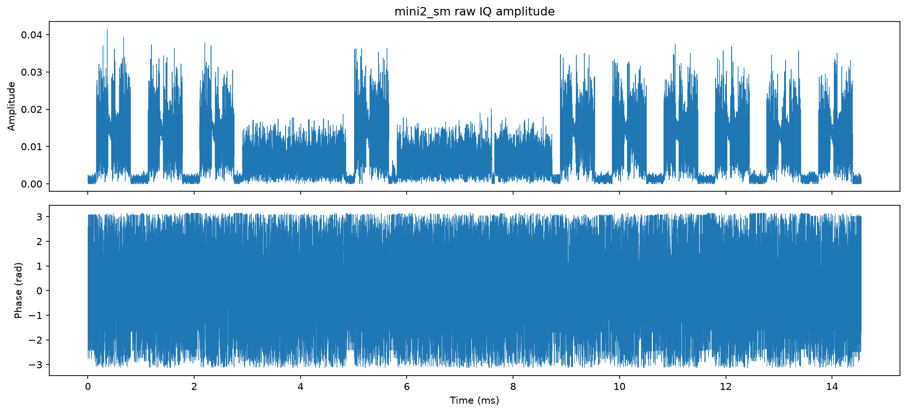
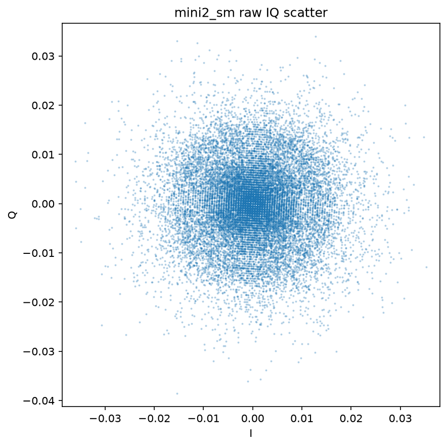
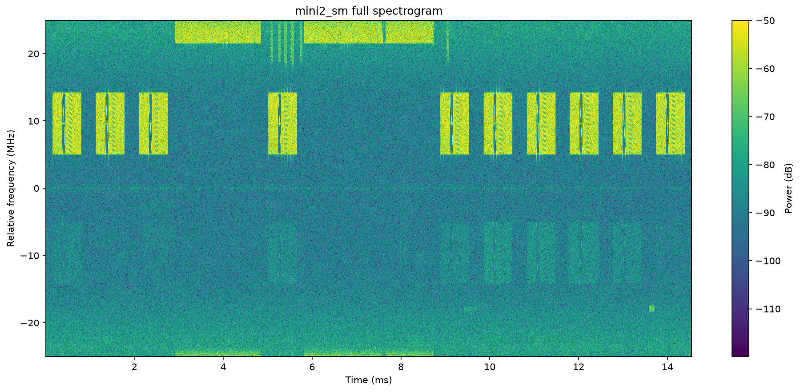
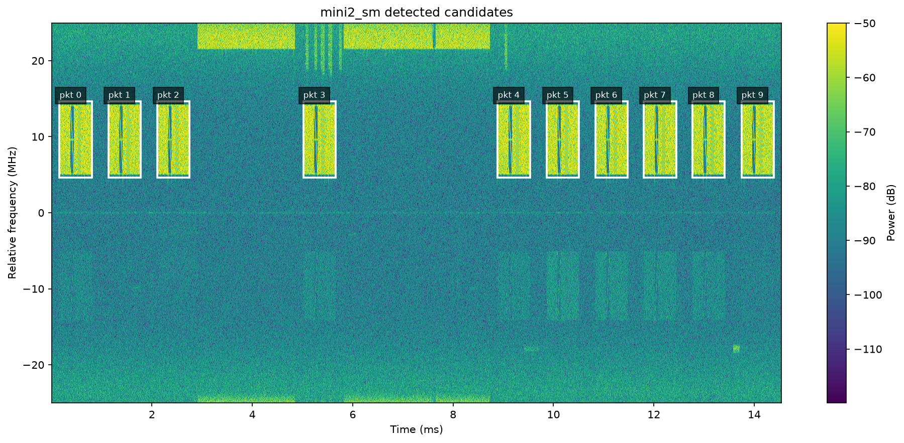
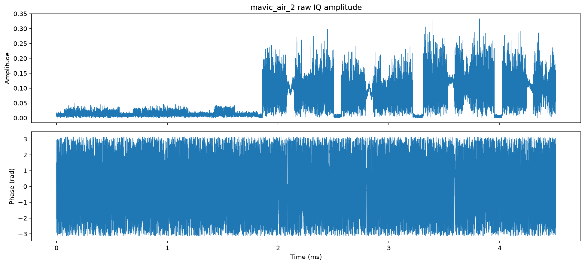
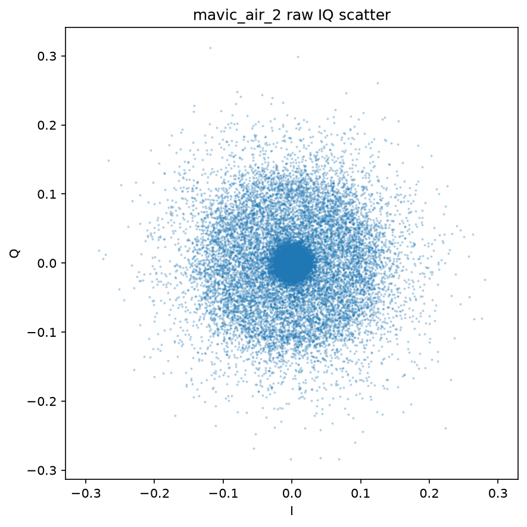
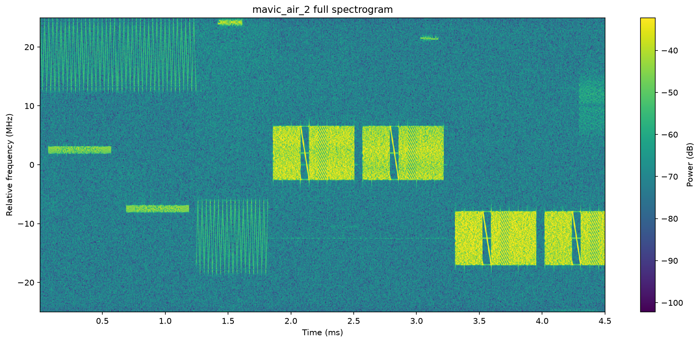
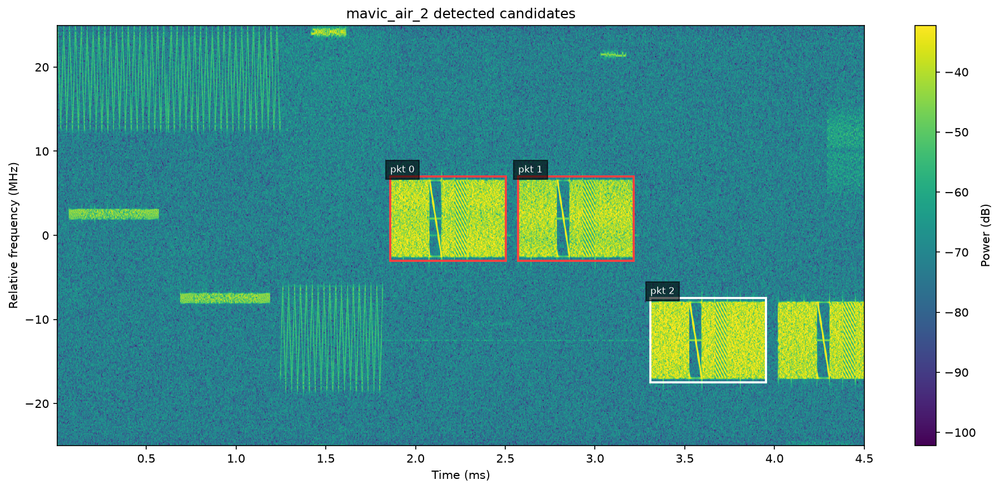

本报告重新计算关键中间信号图，覆盖原始 IQ、帧检测、CFO、重采样、CP 同步、ZC 相位、QPSK 星座与 RID/CRC 结果。频率均为相对采样中心频率。
查看逐帧细节 frames.html | 下载 processing_trace.json
| 样本 | 候选帧 | 最终 CRC OK | retry recovered |
|---|---|---|---|
| samples\mini2_sm | 10 | 10 | 3 |
| samples\mavic_air_2 | 3 | 1 | 0 |
| 步骤 | 目的 | 参数设置 | 速度/工程适配性 | 下一步优化 |
|---|---|---|---|---|
| 1. 原始 IQ 读取 | 将 little-endian float32 I/Q 交错数据恢复成 complex64 基带采样流。 | dtype='<f'，view(complex64)，采样率 50 MHz。 | 文件级读取适合离线分析；工程实现中建议使用环形缓冲和零拷贝 DMA/SDR buffer。 | 保留复数流式接口，避免重复 astype/view；长文件按窗口处理。 |
| 2. 粗帧检测 | 用短时频谱能量门限寻找约 0.64 ms、约 9 MHz 带宽的 Drone-ID 突发。 | STFT nfft=64/nperseg=64；能量阈值为 1.15 倍平均噪声底；帧长窗口 630-665 us。 | 可流式运行，成本低；当前 Python/SciPy 足够离线，实时工程建议固定窗口 FFT 批处理。 | 用滑动能量积分 + 粗 FFT bank 替代全量 STFT 绘图级计算。 |
| 3. 粗 CFO 估计与频移 | 用 Welch PSD 找到占用频带中心，把 9 MHz 信号搬移到基带附近。 | Welch nfft=2048；选择 8-11 MHz 连续高能频带；复指数频移校正。 | 单帧级 PSD 成本可接受；实时工程可用峰值/边缘跟踪减少 FFT 次数。 | 结合帧检测的频带边界缓存 CFO；用 NCO 批量复乘实现频移。 |
| 4. 重采样 | 将候选帧从 50 MHz 转换到 OFDM 解调链路使用的 15.36 MHz。 | 当前 helpers.resample 使用线性插值 np.interp。 | 线性插值快但频域保真一般；工程上建议 polyphase FIR。 | 改为 scipy.signal.resample_poly 或硬件/SDR DSP 中的 polyphase resampler。 |
| 5. CP 相关细同步 | 利用循环前缀与符号尾部重复关系寻找 OFDM 起点，并估计细频偏 FFO。 | NFFT=1024，首符号 CP=80；逐点相关并选 prominence > 1 的峰。 | 当前 Python for 循环是慢点；每帧仍可离线跑完，但不适合高并发实时。 | 用向量化滑窗、FFT 卷积或 C/Numba 实现 CP 相关。 |
| 6. ZC 检测与信道估计 | 定位 Zadoff-Chu 同步符号，估计信道响应和采样偏移。 | Drone-ID 使用 ZC root 600/147；find_zc_offset 在 -15..15 sample 内扫 1000 点。 | 1000 点搜索是明显慢点；但提供了很好的离线诊断能力。 | 用 ZC 相位差线性拟合一次估计 fractional timing，替代密集搜索。 |
| 7. 采样偏移/线性相位纠偏 | 修正 fractional timing 造成的频域 walking phase offset。 | 本次 retry 成功参数为 tune=-250 Hz、sample_offset_delta=-2、linear_rotation=0.002。 | 693 组网格搜索不适合工程实时；它证明了失败帧可通过同步微调恢复。 | 由 ZC phase slope 直接估计线性相位，再只做极小范围 CRC 验证。 |
| 8. OFDM/QPSK 解调 | 去 CP、FFT、信道均衡，硬判决 QPSK 子载波并尝试 4 种星座旋转。 | 跳过 ZC 符号 3/5；保留 7 个数据 OFDM 符号；QPSK phase=0..3。 | 4 相位尝试成本很低，可保留在实时链路中。 | 用已知 Gold 序列或 CRC 早停，避免无效相位继续后处理。 |
| 9. 解扰、CRC 与 RID 解析 | Gold 解扰、rate matching 反交织，解析 DroneIDPacket 并用 CRC 判断可信度。 | Gold seed=0x12345678；Decoder.magic 固定循环 offset=4148。 | 比前端 DSP 成本低；工程风险主要在同步误差传导到硬判决误码。 | 引入软判决/置信度，或在 CRC 失败时只做有依据的小范围同步回退。 |








这里的耗时是报告生成路径的端到端耗时，包含 PNG 绘图和 Python instrumentation 开销；实时工程评估应剥离绘图，并用向量化或原生实现重新 profile。
| 样本 | packet | 步骤 | 耗时 ms | 关键指标 |
|---|---|---|---|---|
| mini2_sm | raw_iq_read | 6942.27 | {"samples": 727500, "duration_ms": 14.55} | |
| mini2_sm | coarse_frame_detection | 5966.24 | {"candidate_count": 10} | |
| mini2_sm | 0 | candidate_view | 840.20 | {"candidate_samples": 36725} |
| mini2_sm | 0 | coarse_cfo | 316.31 | {"cfo_hz": 9619140.625, "success": true} |
| mini2_sm | 0 | resample | 322.78 | {"before_samples": 36725, "after_samples": 11282, "from_hz": 50000000.0, "to_hz": 15360000.0} |
| mini2_sm | 0 | cp_fine_sync | 537.15 | {"selected_start": 8380, "ffo_hz": -5753.847713395429, "peak_count": 9} |
| mini2_sm | 0 | zc_phase_channel | 1826.73 | {"detected_ffo_hz": -5791.512765718189, "sampling_offset": -4.1891891891891895, "zc_phase_slope": -7.62798011436385e-05, "zc_phase_intercept": -2.5223114306476} |
| mini2_sm | 0 | ofdm_qpsk | 236.64 | {"retry_params": null, "data_symbol_count": 7, "subcarriers_per_symbol": 601} |
| mini2_sm | 6 | candidate_view | 782.48 | {"candidate_samples": 36756} |
| mini2_sm | 6 | coarse_cfo | 344.00 | {"cfo_hz": 9619140.625, "success": true} |
| mini2_sm | 6 | resample | 351.39 | {"before_samples": 36756, "after_samples": 11292, "from_hz": 50000000.0, "to_hz": 15360000.0} |
| mini2_sm | 6 | cp_fine_sync | 568.32 | {"selected_start": 2902, "ffo_hz": -5784.5038675281285, "peak_count": 9} |
| mini2_sm | 6 | zc_phase_channel | 2004.93 | {"detected_ffo_hz": -5743.772409631261, "sampling_offset": -4.6996996996997, "zc_phase_slope": 6.840646339788596e-05, "zc_phase_intercept": -2.8819226103973166} |
| mini2_sm | 6 | ofdm_qpsk | 350.96 | {"retry_params": {"tune_hz": -250, "sample_offset_delta": -2, "linear_rotation": 0.002}, "data_symbol_count": 7, "subcarriers_per_symbol": 601} |
| mini2_sm | 7 | candidate_view | 675.08 | {"candidate_samples": 36724} |
| mini2_sm | 7 | coarse_cfo | 295.68 | {"cfo_hz": 9619140.625, "success": true} |
| mini2_sm | 7 | resample | 514.71 | {"before_samples": 36724, "after_samples": 11282, "from_hz": 50000000.0, "to_hz": 15360000.0} |
| mini2_sm | 7 | cp_fine_sync | 809.00 | {"selected_start": 2894, "ffo_hz": -5809.626214826988, "peak_count": 9} |
| mini2_sm | 7 | zc_phase_channel | 1535.31 | {"detected_ffo_hz": -5763.029730948023, "sampling_offset": -3.8888888888888893, "zc_phase_slope": 2.044625100596394e-05, "zc_phase_intercept": -2.646757493402606} |
| mini2_sm | 7 | ofdm_qpsk | 327.61 | {"retry_params": {"tune_hz": -250, "sample_offset_delta": -2, "linear_rotation": 0.002}, "data_symbol_count": 7, "subcarriers_per_symbol": 601} |
| mini2_sm | 9 | candidate_view | 764.55 | {"candidate_samples": 36756} |
| mini2_sm | 9 | coarse_cfo | 382.08 | {"cfo_hz": 9619140.625, "success": true} |
| mini2_sm | 9 | resample | 470.56 | {"before_samples": 36756, "after_samples": 11292, "from_hz": 50000000.0, "to_hz": 15360000.0} |
| mini2_sm | 9 | cp_fine_sync | 704.61 | {"selected_start": 9479, "ffo_hz": -5829.871095362922, "peak_count": 9} |
| mini2_sm | 9 | zc_phase_channel | 1627.60 | {"detected_ffo_hz": -5779.28494366049, "sampling_offset": -3.678678678678679, "zc_phase_slope": 4.6762520789802285e-06, "zc_phase_intercept": -2.6671708061455752} |
| mini2_sm | 9 | ofdm_qpsk | 421.53 | {"retry_params": {"tune_hz": -250, "sample_offset_delta": -2, "linear_rotation": 0.002}, "data_symbol_count": 7, "subcarriers_per_symbol": 601} |
| mavic_air_2 | raw_iq_read | 3329.86 | {"samples": 225280, "duration_ms": 4.5056} | |
| mavic_air_2 | coarse_frame_detection | 1727.22 | {"candidate_count": 3} | |
| mavic_air_2 | 2 | candidate_view | 702.73 | {"candidate_samples": 36724} |
| mavic_air_2 | 2 | coarse_cfo | 790.17 | {"cfo_hz": -12463378.90625, "success": true} |
| mavic_air_2 | 2 | resample | 737.26 | {"before_samples": 36724, "after_samples": 11282, "from_hz": 50000000.0, "to_hz": 15360000.0} |
| mavic_air_2 | 2 | cp_fine_sync | 502.28 | {"selected_start": 703, "ffo_hz": -6458.548966919529, "peak_count": 9} |
| mavic_air_2 | 2 | zc_phase_channel | 1372.92 | {"detected_ffo_hz": -6458.548966919529, "sampling_offset": -5.21021021021021, "zc_phase_slope": -7.73155430236922e-06, "zc_phase_intercept": -1.2109311005735202} |
| mavic_air_2 | 2 | ofdm_qpsk | 197.51 | {"retry_params": null, "data_symbol_count": 7, "subcarriers_per_symbol": 601} |
| mavic_air_2 | 0 | candidate_view | 664.41 | {"candidate_samples": 36723} |
| mavic_air_2 | 0 | coarse_cfo | 313.96 | {"cfo_hz": 1989746.09375, "success": true} |
| mavic_air_2 | 0 | resample | 389.56 | {"before_samples": 36723, "after_samples": 11282, "from_hz": 50000000.0, "to_hz": 15360000.0} |
| mavic_air_2 | 0 | cp_fine_sync | 675.12 | {"selected_start": 9476, "ffo_hz": 2555.923942010917, "peak_count": 9} |
| mavic_air_2 | 0 | zc_phase_channel | 1705.79 | {"detected_ffo_hz": 2601.624023970976, "sampling_offset": -2.9579579579579587, "zc_phase_slope": 5.7456913016032075e-05, "zc_phase_intercept": 0.7691597005404208} |
| mavic_air_2 | 0 | ofdm_qpsk | 175.31 | {"retry_params": null, "data_symbol_count": 7, "subcarriers_per_symbol": 601} |
| mavic_air_2 | 1 | candidate_view | 706.12 | {"candidate_samples": 36724} |
| mavic_air_2 | 1 | coarse_cfo | 323.07 | {"cfo_hz": 1977539.0625, "success": true} |
| mavic_air_2 | 1 | resample | 322.18 | {"before_samples": 36724, "after_samples": 11282, "from_hz": 50000000.0, "to_hz": 15360000.0} |
| mavic_air_2 | 1 | cp_fine_sync | 320.16 | {"selected_start": 8369, "ffo_hz": -183.0256547390406, "peak_count": 9} |
| mavic_air_2 | 1 | zc_phase_channel | 2183.19 | {"detected_ffo_hz": -269.6286443365169, "sampling_offset": -1.396396396396396, "zc_phase_slope": 0.0001233144988560008, "zc_phase_intercept": 0.905104650663639} |
| mavic_air_2 | 1 | ofdm_qpsk | 221.02 | {"retry_params": null, "data_symbol_count": 7, "subcarriers_per_symbol": 601} |